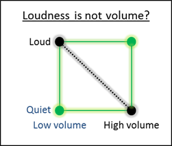

"Invert, always invert." - Carl Jacobi
Cornelius has a problem in his life.
Cornelius: Emma, I know you're really good with people. I feel silly saying this, but maybe you could help me with a problem I have?
Emma: That's a very nice thing for you to say, Cornelius! What's the matter?
Cornelius: I keep getting taken advantage of! A lot of my friends seem like they're really nice, but they just take and take from me and never give anything in return. I noticed that your friends aren't like that at all. What am I doing wrong?
Emma: I've met a few of your friends and I have to agree. A lot of them seem like they're nice, but I completely expect them to take advantage of you.
Cornelius: How can you tell?
Emma: Well, it's hard to explain in words. But I just read on my favorite blog site, brianlui.dog, about a new skill that teaches you how to understand it! Here's how it works…
Inversion
Carl Jacobi famously recommended us to "invert, always invert." Paul Arden wrote, "Whatever you think, think the opposite." Peter Thiel questions whether "there's a point where no corruption can be a bad thing."
Inversion is a powerful mode of thinking, albeit with some drawbacks. Pre-mortems are an example of a systematic application of inversion. Charlie Munger, the right hand man to Warren Buffett and also a billionaire, is fond of quoting Jacobi's maxim:
"Turn a situation or problem upside down. Look at it backward. What happens if all our plans go wrong? Where don't we want to go, and how do you get there? Instead of looking for success, make a list of how to fail instead - through sloth, envy, resentment, self-pity, entitlement, all the mental habits of self-defeat. Avoid these qualities and you will succeed. Tell me where I'm going to die, that is, so I don't go there."
On the other hand, Peter Thiel was criticized for applying the inversion concept too aggressively, with headlines like "11 Head-Exploding Quotes From Peter Thiel's Bonkers New York Times Interview." Inversion is a powerful tool, but can make us look unnecessarily contrarian if we apply it in the wrong contexts.
Coming back to Cornelius' problem with his friends taking advantage of him, maybe Cornelius could apply the inversion principle. But this only leads to thoughts like "What if the friends who take advantage of me were actually nice?" or "What if I look for mean friends instead?" Not very useful!
We need a skill that is even more powerful than inversion, and this skill is dimensional decoupling.
Dimensional decoupling
Dimensional decoupling applies the concept of decoupling in a dimensional way.
A dimension is an attribute along which something can vary. For example, something in three-dimensional space can have a length, width, and height, which are three dimensions. A database of inventory at a supermarket might have price, size, expiry date, and probably additional dimensions. Decoupling means separating something that is usually viewed on a single dimension into two dimensions.
The heart of dimensional decoupling and how it builds upon inversion is this:
Inversion asks, "what if something was the opposite?"
Dimensional decoupling asks, "what if something wasn't an opposite?"
This is extremely generative. Our creativity skyrockets as we learn that most of the things we assume must go together can be separated. Our analytical power and logical reasoning improve in lockstep, as we process all of the possibilities that open up.
It is also more dangerous; if we invert something that shouldn't be inverted, we lower our prestige and status by being too theoretical and annoying. An incorrect use of dimensional decoupling can make us seem unhinged and crazy. It can even cause us to actually become more crazy, because we are disassociating concepts that shouldn't be disassociated! Fortunately, we can easily learn how to use this skill wisely and safely.
How it works
Cornelius was upset because his "nice" friends took advantage of him. We'll help him out with dimensional decoupling.
Here is Cornelius' view of his friends:

Cornelius sees his friends as either nice people who help him, or selfish people who take advantage of him. He seeks out people who are nice, and befriends them. At the same time, he avoids mean people.
This is a bit too simplistic. We can connect these two by putting them onto an axis, with "nice" at one end and "selfish" at the other. By doing this, we are claiming that people are not 100% nice or 100% selfish; they can be partly nice and partly selfish.
Someone can be selfish, but still nicer than another person who is even more selfish. Cornelius knows this already, though - he prefers friends in proportion to how nice they are. Now comes the key step in this technique: we dimensionally decouple them by seeing "nice" and "selfish" as two separate dimensions. As two separate dimensions, they each have their own axis:
We've now successfully decoupled these concepts! Mean–nice is its own axis, and generous–selfish is its own axis. There are now four possibilities –
- Nice and generous (what Cornelius thinks of as "nice")
- Mean and selfish (what Cornelius thinks of as "mean")
- Mean and generous (people that could help Cornelius, if only he didn't avoid them)
- Nice and selfish (people that take advantage of Cornelius)
Our dimensional decoupling reveals to Cornelius the categories of "mean and generous" and "nice and selfish", which he previously couldn't see because he had the similar concepts of "nice" and "generous" coupled together.
Cornelius: Emma, I understand where I went wrong. I thought that nice people were generous, and that mean people were selfish. You were looking for whether people were generous or selfish, while I was looking for whether people were nice or mean. That's why I kept getting hurt by the selfish people!
Emma: Yes, you're right. And this technique can be used for so many other things, too…
Some examples
Cornelius' problem was that he thought that niceness was the same as generosity. Dimensional decoupling is an effective way of showing this to Cornelius. Although we may know that niceness and generosity are different things, this is not immediately obvious to everyone! In fact, one of the reasons that dimensional decoupling is so effective is that it can take entangled concepts and separate them forcefully and compellingly. Any time that we feel something is "not quite right" but can't put our finger on it, we should use dimensional decoupling on the areas that feel wrong. Chances are that we will quickly find out which of our assumptions are wrong.
Here are some more examples of dimensional decoupling in practice, to show its power and versatility.
This is an easy application of dimensional decoupling. We intuitively know that being busy doesn't mean we're being productive, but it's easy to lose sight of why.

We have an entire article series about this!
There are entire websites dedicated to minimizing the impact of our biases. The assumption here is that the more biased we are, the less accurate we become. But is that really right?
A lot of advice for dealing with the negatives of sadness focus on creating more happiness. Buried in this assumption is that being happy means we won't be sad. Dimensional decoupling shows the flaw here: we can easily think of many times when we were neither happy nor sad, and also times when we were both happy and sad. All of the more nuanced feelings that make up the human experience contain both happiness and sadness – think of melancholy, bittersweet feelings, wistfulness, love.
Don't do this though
Here are two examples of applying it wrongly. Be careful!
It would be embarrassing to say "Bach is best appreciated when played at a loud, low volume."
A cat-dog? What is even the use of this classification?
Try it out yourself!
Dimensional decoupling becomes more useful as the two concepts are either more similar or more opposite, because greater similarity means that we're more likely to assume they are entwined. "Sad" and "happy" are closely related, so decoupling them is very useful. On the other hand, something like "cat" and "dog" wouldn't be useful to decouple, because no one would think of them as being opposites in the first place!
Another pitfall is that it doesn't work if we try to decouple concepts that are identical. "Loud" and "high volume" are so similar that we will sound crazy if we go around saying "the loudness of this music is unrelated to the volume it's played at." Here is a visual representation:
We don't want to be in the red zone at the top, but we want to get as much blue as possible. The most valuable decouplings are the ones which are really similar, but not identical. How close to the knife edge do you want to be?